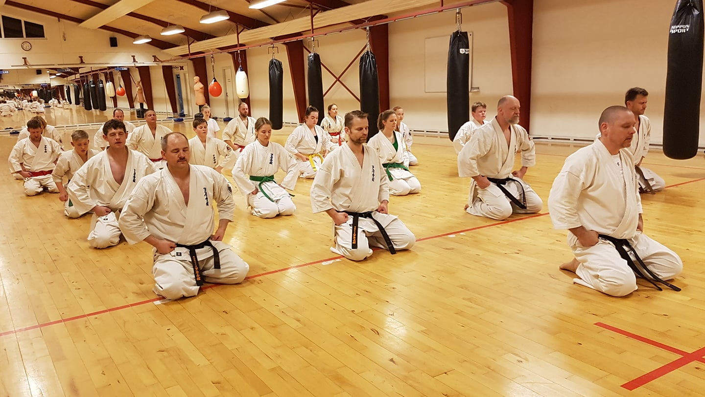

Træning og etikette
Træning
Ashihara Karate er åbent for alle, uanset alder eller fysisk form. Alt, hvad en nybegynder behøver, er gå-på-mod og en joggingdragt (indtil den første graduering).
Vi inviterer dig til at træde ind i vores dojo og prøve et par timers karatetræning. Mærk energien, lær teknikkerne og afgør selv, om dette er noget for dig. Begynderhold starter typisk efter sommerferien og jul, men nye medlemmer kan altid begynde deres rejse mod mesterskab når som helst. Vi ser frem til at dele karateoplevelsen med dig!
Træningstider
Voksne
- Tirsdag :
- Fredag :
- Lørdag :
- 18:30 - 20:00
- 17:00 - 18:30
- 10:00 - 12:00*
Børn (8 - 14 år)
- 17:30 - 18:30
- 16:00 - 17:00
*Træningstiden lørdag er mest beregnet til teknisk- og fysisk kamptræning.
Børn fra børneholdet har selvfølgelig også mulighed for at udnytte denne træningstid. Her sætter de selv tempoet og kan få en mere intens træning, sammen med de voksne.

Træningselementer
Træningen i Hadsund Karate Skolen er en energifyldt oplevelse. Uanset dit erfaringsniveau inviterer vi dig ind i en verden af spændende træningselementer, herunder:
- Bevægelsestræning
- Basis (stød, slag, spark m.m.)
- Sparke- og "Bokse"-træning
- Videotræning
- Fysisk træning (pude, cirkel, styrke m.m.)
- Afspænding (afslapning, massage, smidighed m.m.)
Formål med Ashihara træning
Fokus i Ashihara er, med Sensei Brian Hansens ord, på at lære at forsvare sig selv,
få styrke og god kondition. Det handler også om at opnå mental styrke, og en god
psyke. Pointen er faktisk, at man skal undgå slagsmål, og lære ikke at slås.
Balancen mellem det fysiske og det mentale er centralt i karaten, og beherskelsen
af karatens teknikker giver både fysisk styrke, kontrol og balance, men også en
generel sikkerhed i kropssproget.
Udøvelsen af Ashihara handler rigtig meget om at opnå kontrol over
modstanderen. Kernen er dermed at lære et væld af forskellige teknikker, der gør
det muligt at gøre modstanderen ”ukampdygtig” ved at man får fysisk kontrol over
vedkommende, f.eks. ved at komme på den blinde side af modstanderen og
kontrollere denne ved f.eks. at låse arm eller hoved.
Etikette
Generelt
- Ure og smykker må ikke bæres under træningen.
- Der må ikke spises eller medtages glas-genstande i dojoen.
- Under træningen er al tale, fløjten o.l forbudt.
- Negle skal altid være kortklippede og rene, og for øvrigt skal eleven altid fremtræde soigneret.
- Kun klubbens godkendte mærker er tilladt og krævet på gien.
I dojoen
- Ved indtræden og udtræden af dojoen standser man op og bukker reglementeret ledsaget med ordet ”osu”.
- Før man træder ind i dojoen, skal gien sidde korrekt og bæltet være bundet. Aftagning af udstyr sker først efter man er trådt ud af dojoen.
- Når instruktøren starter træningen, går eleverne hurtigt ind på række, højeste grad begynder fra højre. Alle stiller sig i "fudo dachi" (klar-stilling)
- Når instruktørens forklaring er forstået, svares med et "osu" uden man er opfordret hertil. Dette gælder såvel den enkelte elev som hele holdet.
- Kommer man for sent, skal man først sikre sig, at der ikke mediteres i dojoen. I så fald skal man vente med at gå ind til meditationen er færdig. Man bukker ved indgangen og sætter sig med ryggen mod shinden i seiza-stilling med lukkede øjne og afventer instruktørens tilkendegivelse, hvorefter man rejser sig og bukker for instruktøren ledsaget af "osu onegai shimasu". Derefter går man ned i bagerste række og deltager i træningen.
- Ingen må forlade dojoen under træningen uden først at have indhentet instruktørens tilladelse.
- Under et holds meditation skal alle andre i dojoen forholde sig fuldstændigt roligt.
- Overværer man andres træning, skal man også selv være koncentreret og seriøs.
- Når der rettes på bælte eller gi, vendes ryggen til shinden.
Etikette overfor højere graduerede
- Alle karateudøvere hilser på hinanden med "osu", også uden for træningssalen. Ordet "Osu" er en international karatehilsen, der udtales højt og tydeligt. Reglen er, at laveste grad hilser først. Når der hilses på et sortbælte skal "osu" ledsages af sempai eller sensei.
- Sortbælte 1. -2. dan tiltales med sempai. Branch-chiefs og sortbælter med 3. dan og opefter tiltales med sensei.
- Man optræder altid respektfuldt overfor højere-graduerede.
- Alle karate-kaer skal i deres optræden virke som gode eksempler for de lavere- graduerede.
- Karate-etiketten er næsten den samme for alle Ashihara skoler i verden. Der er derfor ingen, der behøver at være i tvivl om, hvordan man skal opføre sig i en "fremmed" dojo.
Kalender